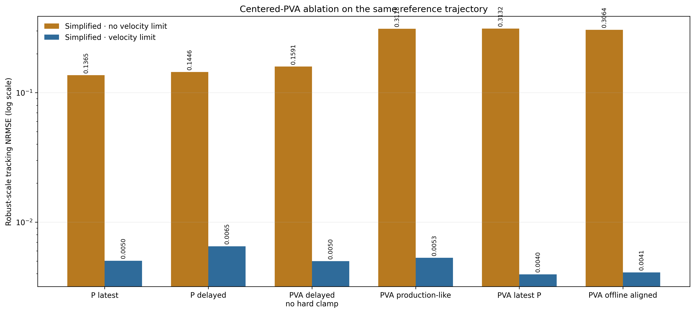
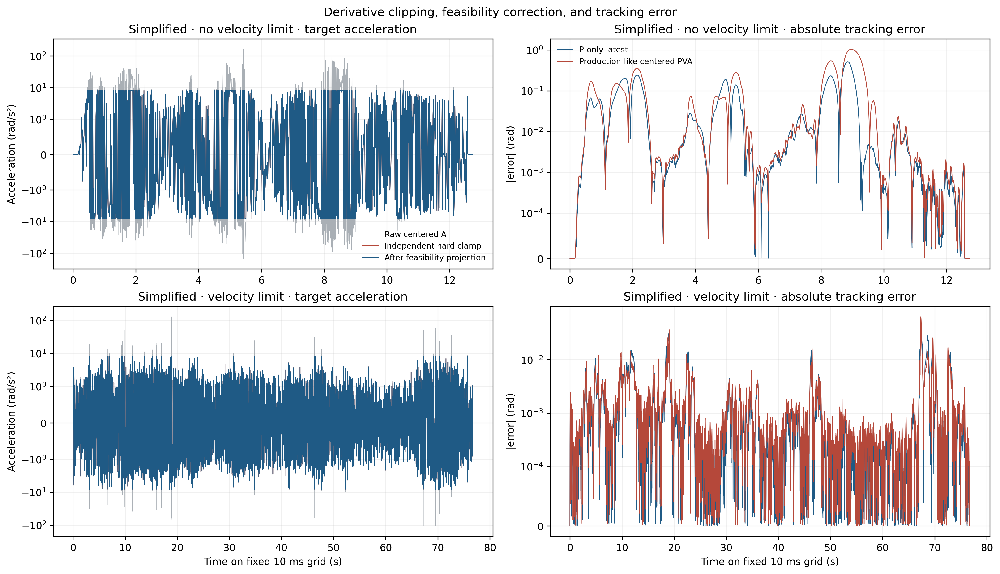
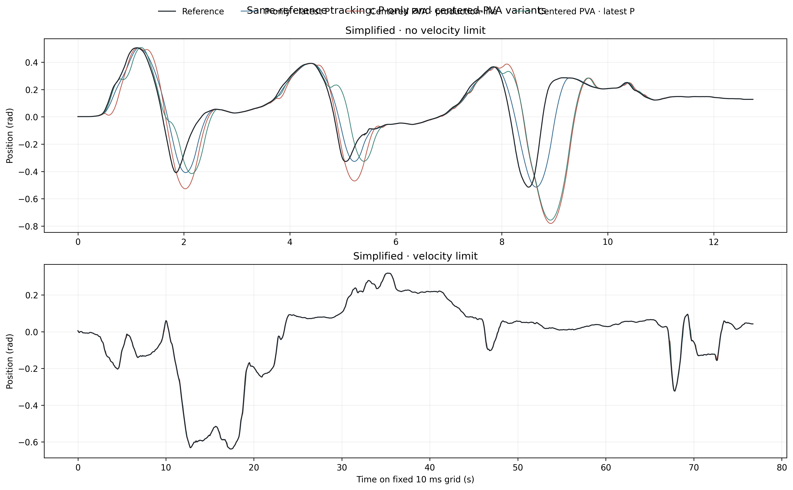

Centered-Difference PVA 回归诊断
同轨迹、同控制器条件下，复现并拆解 centered-difference PVA 相对 P-only 的性能回归。
q[k−1] 的一拍老化、位置二阶差分放大、以及独立裁剪 V/A 后的
目标状态不一致叠加造成回归。无速度限制轨迹中 production-like PVA 比
P-only 恶化 128.4%；速度限制轨迹
只恶化 5.3%，且改用最新位置后
可以优于 P-only。无速度限制 · P-only NRMSE
0.136508
Production-like: 0.311793
(+128.4%)
速度限制 · P-only NRMSE
0.005036
Production-like: 0.005301
(+5.3%)
同轨迹消融
生产 estimator 在 arrival k 输出中心点 k−1 的 P/V/A；ordinary-Ruckig
runner 使用 target[k] → output[k+1]。因此相对最新输入，
production-like 目标比 latest-P 的 P-only 多一拍老化。

导数限幅与跟踪误差
无速度限制轨迹的 P99 |A| 为 64.87 rad/s²，约 24.9% 的 A 目标被裁到 ±8.2；速度限制轨迹的 P99 |A| 为 7.07 rad/s²，只有约 0.83% 被裁剪。 P-only 的零 V/A 在粗糙、局部不可行的输入上相当于强正则化。

轨迹对比

精确指标
| Trajectory | Method | NRMSE | vs P-only (%) | Lag (ms) | A clamp rate | P99 |A| |
|---|---|---|---|---|---|---|
| Simplified · no velocity limit | P latest | 0.136508 | 0 | 120 | 0 | 0 |
| Simplified · no velocity limit | P delayed | 0.144569 | 5.90532 | 130 | 0 | 0 |
| Simplified · no velocity limit | PVA joint projection | 0.159108 | 16.556 | 140 | 0 | 64.8711 |
| Simplified · no velocity limit | PV production timing | 0.326357 | 139.075 | 310 | 0 | 0 |
| Simplified · no velocity limit | PVA production-like | 0.311793 | 128.406 | 220 | 0.249214 | 64.8711 |
| Simplified · no velocity limit | PVA latest P | 0.313246 | 129.471 | 300 | 0.249214 | 64.8711 |
| Simplified · no velocity limit | PVA age compensated | 0.375056 | 174.75 | 280 | 0.249214 | 64.8711 |
| Simplified · no velocity limit | PVA offline aligned | 0.30637 | 124.433 | 210 | 0.249214 | 64.8711 |
| Simplified · velocity limit | P latest | 0.00503648 | 0 | 30 | 0 | 0 |
| Simplified · velocity limit | P delayed | 0.0065141 | 29.3385 | 40 | 0 | 0 |
| Simplified · velocity limit | PVA joint projection | 0.00499515 | -0.820582 | 30 | 0 | 7.06749 |
| Simplified · velocity limit | PV production timing | 0.0069832 | 38.6525 | 40 | 0 | 0 |
| Simplified · velocity limit | PVA production-like | 0.005301 | 5.25216 | 30 | 0.0083442 | 7.06749 |
| Simplified · velocity limit | PVA latest P | 0.00395522 | -21.4684 | 20 | 0.0083442 | 7.06749 |
| Simplified · velocity limit | PVA age compensated | 0.00569683 | 13.1114 | 30 | 0.0083442 | 7.06749 |
| Simplified · velocity limit | PVA offline aligned | 0.00409463 | -18.7005 | 20 | 0.0083442 | 7.06749 |
时间戳与差分放大
CSV timestamp 仅作为 header stamp 的未验证代理。无速度限制 CSV 的 Δt 为 2.71–22.08 ms，最大二阶差分系数 L1 增益约为固定 10 ms 的 5.6 倍。 两条轨迹都没有超过 50 ms，因此 reset 不是本次回归原因。
| Trajectory | Time basis | Min Δt (ms) | Max Δt (ms) | Gap resets | Max A gain (s⁻²) |
|---|---|---|---|---|---|
| Simplified · no velocity limit | fixed_10ms | 10 | 10 | 0 | 40000 |
| Simplified · no velocity limit | csv_timestamp_proxy | 2.707 | 22.0764 | 0 | 224840 |
| Simplified · velocity limit | fixed_10ms | 10 | 10 | 0 | 40000 |
| Simplified · velocity limit | csv_timestamp_proxy | 8.9798 | 11.0855 | 0 | 44312.6 |
建议
- 优先消除 target age：至少使用最新 P，并明确 V/A 是中心点还是当前时刻。
- 不要独立裁剪 V/A 后假设状态仍自洽；采用联合可行域投影或受约束拟合。
- position 先滤波再求导，并监控 A clamp rate、target ΔA/Δt 与 timestamp jitter。
- 当导数饱和率高时降级为 P-only/可信 PV，而不是持续注入饱和 A。
- 用真实 header stamp、回调时刻、clamp 和 Ruckig result 做逐周期在线复核。
限制
当前 worktree 不含生产 C++ 文件；timestamp provenance 和 estimator 预热期间 controller 的真实行为仍需确认。该实验是单关节 ordinary-Ruckig 机制复现，不含 plant、通信噪声和多关节同步。